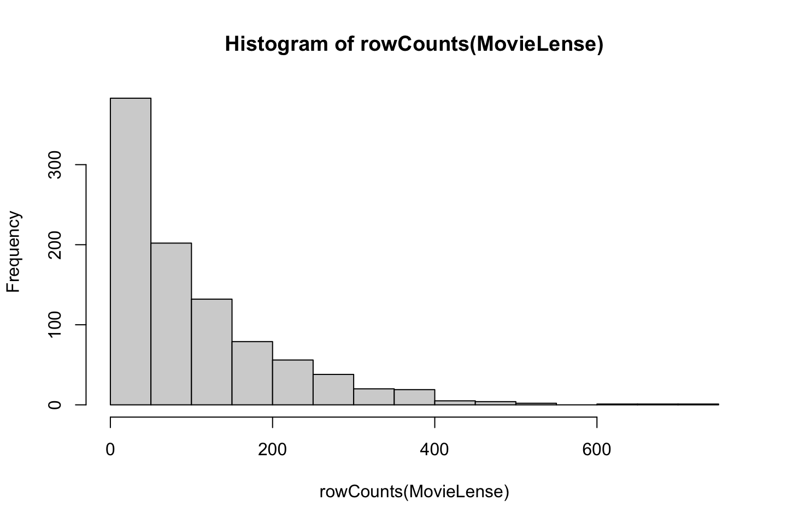
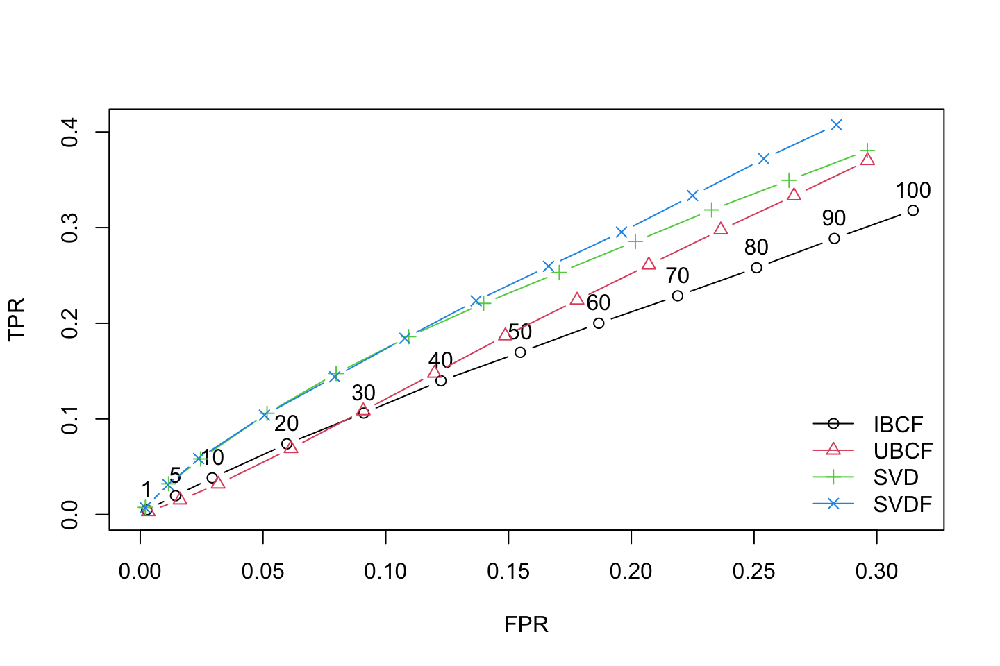

3 Recommender Systems and Customer Targeting
This group of lectures cover three different approaches to mining associations.
- Association rules
- Collaborative filtering
- Latent factor models
Association rules
We see that association rules looks at transactions and assess what products there appear to be on the same transaction, and thus creates association rules based on these.
With these rules you can start making recommendations or generate ideas of what products should be marketed together. For instance one of the fun examples is where you see that beers and diapers often comes together. When you think about it, it is very logical, because people with small kids cant go out, but they might still enjoy a beer, thus they have to do it at home.
Collaborative filtering
Then we have collaborative filtering. Here we will work on two different approaches, item-based and user-based.
User-based: we want to predict one users ratings of a given product/service based on similarity with other users.
item-based: we want to predict one users ratings of a given product/service based on its similarity with other products, e.g., if one consistenly rate thai food high, then he may also like other thai food, this is in principle also what I have explored with the recommender system on the DSP.
This is very much used for making recommender system. This was also very much applied in the Netflix competition.
With this, we have the term cold start, that is when you have a new user, you must make some recommendations before you can use the contents, e.g., what you are doing at Netflix, so it starts knowing your preferences.
Latent factor models
The last approach is the latent factor model, this is just an extension of the user-based and item-based, where both scenarios are considered. This method assumes that we make some constructs, e.g., as in SEM, where the constructs are explained by different items (movies). Then it would be obvious to make constructs based on different genres. These constructs are not directly observable, hence the name latent.
Within LFM cold start also applies.
In general we see that this model gives the best predictions. That is also due to the possibility of regularizing user ratings, hence accounting for user specific biases.
Notice that in the very end of this chapter a comparison between IBCF, UBCF, latent factor models and latent factor models accounting for user bias is shown.
3.1 Association rule
Basically the method looks at what products that appear in the same transaction and the finds pairs, or items that come together.
Terms:
- Items: these are the different products that can be bought, can also be a product group
- Itemset: this is the dataset containing a list of all of the items
- Syntatic Constrains: constraints involving restrictions on items that can appear in a rule. E.g., one may say, that we only want to evaluate one item (product) or an itemrange.
- Support Constraints: constraints the number of transactions in T that support a rule. Notice that in R there are default values for this.
- Minsupport: This is the threshold assigned to item pairs, used in procedure 1. + Large itemssets: Item combinations that meets the minsupport. This is denoted with I1,I2,…Ik. + Small itemssets: Item combinations that does not meet the minsupport
Procedure:
1. Generate all combinations of items that have fractional transactinos support. Perhaps above a certain threshold.
a. We group all combinations in two groups:
i. Large itemsets. Examples: 1) Diaper and beer, 2) Milk, Bread --> Eggs, Coke.
ii. Small itemsets.
For a large itemset generate all rules, that use items from the large itemsets (I1,I2,…Ik). We call all of these rules subsets (X) of Y.
# https://www.datacamp.com/community/tutorials/market-basket-analysis-r
#install and load package arules
library(arules)
library(arulesViz)
library(tidyverse)
library(readxl)
library(knitr)
library(ggplot2)
library(lubridate)
library(plyr)
library(dplyr)
library(DataExplorer)3.1.1 Loading and data exploration
First we load it
#read excel into R dataframe
retail <- read_excel('Data/Recommender Systems/Online_Retail.xlsx')
attach(retail)The data frame has rows with granularity of items, hence one item pr. line. Where one invoice may occur several times.
We also have some other information. notice that stock code is an ID for the product.
We see that some have some odd quantities, these are just plotted to see what is going on.
plot(Quantity[StockCode == 23843])
plot(Quantity[StockCode == 23166])
3.1.2 Data preprocessing
complete.cases(data) will return a logical vector indicating which rows have no missing values. Then use the vector to get only rows that are complete using retail[,]. That is because we have NA’s.
plot_missing(retail)
We see that the customer ID is only there 75% of the time, also the description appear to be missing in some examples. Now we are going to remove these.
retail <- retail[complete.cases(retail), ]
plot_missing(retail)
Now we see that we remove approx. 140.000 observations, where we had 541.909 observations before and 406.829 observations after removing NA’s, corresponding with approx. 25% of the observations.
3.1.2.1 Encoding to correct data types
Now we want to make the description a factor instead of character.
#The following prints whole tables, although I just show the first couple of rows in a following chunk
retail %>% mutate(Description = as.factor(Description))
retail %>% mutate(Country = as.factor(Country))retail$Date <- as.Date(retail$InvoiceDate)head(retail)| InvoiceNo | StockCode | Description | Quantity | InvoiceDate | UnitPrice | CustomerID | Country | Date |
|---|---|---|---|---|---|---|---|---|
| 536365 | 85123A | WHITE HANGING HEART T-LIGHT HOLDER | 6 | 2010-12-01 08:26:00 | 2.55 | 17850 | United Kingdom | 2010-12-01 |
| 536365 | 71053 | WHITE METAL LANTERN | 6 | 2010-12-01 08:26:00 | 3.39 | 17850 | United Kingdom | 2010-12-01 |
| 536365 | 84406B | CREAM CUPID HEARTS COAT HANGER | 8 | 2010-12-01 08:26:00 | 2.75 | 17850 | United Kingdom | 2010-12-01 |
| 536365 | 84029G | KNITTED UNION FLAG HOT WATER BOTTLE | 6 | 2010-12-01 08:26:00 | 3.39 | 17850 | United Kingdom | 2010-12-01 |
| 536365 | 84029E | RED WOOLLY HOTTIE WHITE HEART. | 6 | 2010-12-01 08:26:00 | 3.39 | 17850 | United Kingdom | 2010-12-01 |
| 536365 | 22752 | SET 7 BABUSHKA NESTING BOXES | 2 | 2010-12-01 08:26:00 | 7.65 | 17850 | United Kingdom | 2010-12-01 |
We also want a column with the date and one with the transaction time.
#Extract time from InvoiceDate and store in another variable
TransTime <- format(retail$InvoiceDate,"%H:%M:%S")
#Convert and edit InvoiceNo into numeric
InvoiceNo <- as.numeric(as.character(retail$InvoiceNo))
#Bind new columns TransTime and InvoiceNo into dataframe retail
retail <- cbind(retail,TransTime)Now we can glimpse
glimpse(retail)## Rows: 406,829
## Columns: 10
## $ InvoiceNo <chr> "536365", "536365", "536365", "536365", "536365", "536365"…
## $ StockCode <chr> "85123A", "71053", "84406B", "84029G", "84029E", "22752", …
## $ Description <chr> "WHITE HANGING HEART T-LIGHT HOLDER", "WHITE METAL LANTERN…
## $ Quantity <dbl> 6, 6, 8, 6, 6, 2, 6, 6, 6, 32, 6, 6, 8, 6, 6, 3, 2, 3, 3, …
## $ InvoiceDate <dttm> 2010-12-01 08:26:00, 2010-12-01 08:26:00, 2010-12-01 08:2…
## $ UnitPrice <dbl> 2.55, 3.39, 2.75, 3.39, 3.39, 7.65, 4.25, 1.85, 1.85, 1.69…
## $ CustomerID <dbl> 17850, 17850, 17850, 17850, 17850, 17850, 17850, 17850, 17…
## $ Country <chr> "United Kingdom", "United Kingdom", "United Kingdom", "Uni…
## $ Date <date> 2010-12-01, 2010-12-01, 2010-12-01, 2010-12-01, 2010-12-0…
## $ TransTime <chr> "08:26:00", "08:26:00", "08:26:00", "08:26:00", "08:26:00"…3.1.2.2 Create a data frame with one row pr. invoice
What you need to do is group data in the retail dataframe either by CustomerID, CustomerID, and Date or you can also group data using InvoiceNo and Date. We need this grouping and apply a function on it and store the output in another dataframe.
This can be done by ddply.
The following lines of code will combine all products from one InvoiceNo and date and combine all products from that InvoiceNo and date as one row, with each item, separated by “,”.
library(plyr)
transactionData <- ddply(.data = retail
,.variables = c("InvoiceNo","Date") #Group by
,.fun = function(df1)paste(df1$Description #This concatenates the items
,collapse = ","))
head(transactionData)| InvoiceNo | Date | V1 |
|---|---|---|
| 536365 | 2010-12-01 | WHITE HANGING HEART T-LIGHT HOLDER,WHITE METAL LANTERN,CREAM CUPID HEARTS COAT HANGER,KNITTED UNION FLAG HOT WATER BOTTLE,RED WOOLLY HOTTIE WHITE HEART.,SET 7 BABUSHKA NESTING BOXES,GLASS STAR FROSTED T-LIGHT HOLDER |
| 536366 | 2010-12-01 | HAND WARMER UNION JACK,HAND WARMER RED POLKA DOT |
| 536367 | 2010-12-01 | ASSORTED COLOUR BIRD ORNAMENT,POPPY’S PLAYHOUSE BEDROOM,POPPY’S PLAYHOUSE KITCHEN,FELTCRAFT PRINCESS CHARLOTTE DOLL,IVORY KNITTED MUG COSY,BOX OF 6 ASSORTED COLOUR TEASPOONS,BOX OF VINTAGE JIGSAW BLOCKS,BOX OF VINTAGE ALPHABET BLOCKS,HOME BUILDING BLOCK WORD,LOVE BUILDING BLOCK WORD,RECIPE BOX WITH METAL HEART,DOORMAT NEW ENGLAND |
| 536368 | 2010-12-01 | JAM MAKING SET WITH JARS,RED COAT RACK PARIS FASHION,YELLOW COAT RACK PARIS FASHION,BLUE COAT RACK PARIS FASHION |
| 536369 | 2010-12-01 | BATH BUILDING BLOCK WORD |
| 536370 | 2010-12-01 | ALARM CLOCK BAKELIKE PINK,ALARM CLOCK BAKELIKE RED,ALARM CLOCK BAKELIKE GREEN,PANDA AND BUNNIES STICKER SHEET,STARS GIFT TAPE,INFLATABLE POLITICAL GLOBE,VINTAGE HEADS AND TAILS CARD GAME,SET/2 RED RETROSPOT TEA TOWELS,ROUND SNACK BOXES SET OF4 WOODLAND,SPACEBOY LUNCH BOX,LUNCH BOX I LOVE LONDON,CIRCUS PARADE LUNCH BOX,CHARLOTTE BAG DOLLY GIRL DESIGN,RED TOADSTOOL LED NIGHT LIGHT,SET 2 TEA TOWELS I LOVE LONDON,VINTAGE SEASIDE JIGSAW PUZZLES,MINI JIGSAW CIRCUS PARADE,MINI JIGSAW SPACEBOY,MINI PAINT SET VINTAGE,POSTAGE |
So we see that now we have granularity on invoiceNo, and the the date and lastly the items are listed, where they are separated with a comma.
Now we only want the items pr. invoice (basket), hence we remove the invoice InvoiceNo and Date.
transactionData <- as.data.frame(transactionData$V1)
colnames(transactionData) <- c("items") #Rename column to items
transactionData[1,]## [1] "WHITE HANGING HEART T-LIGHT HOLDER,WHITE METAL LANTERN,CREAM CUPID HEARTS COAT HANGER,KNITTED UNION FLAG HOT WATER BOTTLE,RED WOOLLY HOTTIE WHITE HEART.,SET 7 BABUSHKA NESTING BOXES,GLASS STAR FROSTED T-LIGHT HOLDER"We see that the dataframe now consists of only on column with all items separated with a comma. Now we are going to save it, and load it back into the environment.
Saving the data
write.csv(transactionData,"Data/Recommender Systems/market_basket_transactions.csv", quote = FALSE, row.names = FALSE)3.1.3 Loading transactions
tr <- read.transactions('market_basket_transactions.csv', format = 'basket', sep=',')
summary(tr)## transactions as itemMatrix in sparse format with
## 22191 rows (elements/itemsets/transactions) and
## 7876 columns (items) and a density of 0.001930725
##
## most frequent items:
## WHITE HANGING HEART T-LIGHT HOLDER REGENCY CAKESTAND 3 TIER
## 1803 1709
## JUMBO BAG RED RETROSPOT PARTY BUNTING
## 1460 1285
## ASSORTED COLOUR BIRD ORNAMENT (Other)
## 1250 329938
##
## element (itemset/transaction) length distribution:
## sizes
## 1 2 3 4 5 6 7 8 9 10 11 12 13 14 15 16
## 3598 1594 1141 908 861 758 696 676 663 593 624 537 516 531 551 522
## 17 18 19 20 21 22 23 24 25 26 27 28 29 30 31 32
## 464 441 483 419 395 315 306 272 238 253 229 213 222 215 170 159
## 33 34 35 36 37 38 39 40 41 42 43 44 45 46 47 48
## 138 142 134 109 111 90 113 94 93 87 88 65 63 67 63 60
## 49 50 51 52 53 54 55 56 57 58 59 60 61 62 63 64
## 59 49 64 40 41 49 43 36 29 39 30 27 28 17 25 25
## 65 66 67 68 69 70 71 72 73 74 75 76 77 78 79 80
## 20 27 24 22 15 20 19 13 16 16 11 15 12 7 9 14
## 81 82 83 84 85 86 87 88 89 90 91 92 93 94 95 96
## 15 12 8 9 11 11 14 8 6 5 6 11 6 4 4 3
## 97 98 99 100 101 102 103 104 105 106 107 108 109 110 111 112
## 6 5 2 4 2 4 4 3 2 2 6 3 4 3 2 1
## 113 114 116 117 118 120 121 122 123 125 126 127 131 132 133 134
## 3 1 3 3 3 1 2 2 1 3 2 2 1 1 2 1
## 140 141 142 143 145 146 147 150 154 157 168 171 177 178 180 202
## 1 2 2 1 1 2 1 1 3 2 2 2 1 1 1 1
## 204 228 236 249 250 285 320 400 419
## 1 1 1 1 1 1 1 1 1
##
## Min. 1st Qu. Median Mean 3rd Qu. Max.
## 1.00 3.00 10.00 15.21 21.00 419.00
##
## includes extended item information - examples:
## labels
## 1 1 HANGER
## 2 10 COLOUR SPACEBOY PEN
## 3 12 COLOURED PARTY BALLOONSWe see that when we load it back into the environment using read.transactions() we create something similar to a data term matrix, this is merely a sparse matrix, where we see that we have 7.876 items and 22.191 baskets/invoices. Hence each row is just ‘ticked-off’ if the basket contains the product.
We see the summary specify that we have 22.191 transactions and 7.876 items, the most frequent is ‘white hanging heeart t-light holder’. We see that the largest basket has 419 units. Where basket sizes of 1 unit is the most typical.
Then the mean = 15 products and the median 10 products.
3.1.4 Plotting
Now we want to plot the most frequent products.
# Create an item frequency plot for the top 20 items
library(RColorBrewer)
itemFrequencyPlot(tr
,topN = 20
,type = "absolute"
,col = brewer.pal(8,'Pastel2')
,main = "Absolute Item Frequency Plot")
We see that top combinations. E.g., more than 1.500 baskets where the top combination occurs. Now we can look at it in a relative way instead.
itemFrequencyPlot(tr
,topN = 20
,type = "relative"
,col = brewer.pal(8,'Pastel2')
,main = "Relative Item Frequency Plot")
This is basically the same, just written in percentage.
3.1.5 Apriori calculation
We will now start looking at association rules. To do so, we apply the apriori principle.
We set the following:
- supp = minimum support, where we see that the combinations must occur in at least 0.1% of the baskets
- conf = the describes the conditional relationship between the left-hand and right-hand side. Hence we want a relationship that is greater than 80%, as we want to avoid random pairs.
- maxlen = the maximum length of items in a basket.
# Min Support as 0.001, confidence as 0.8.
association.rules <- apriori(data = tr
,parameter = list(supp = 0.001 #we only see rules where the support is at least 0.001
,conf = 0.8 #The confidence should be at least 0.8
,maxlen = 10 #We only want ot look at a max length of 10 items pr. basket
)
)## Apriori
##
## Parameter specification:
## confidence minval smax arem aval originalSupport maxtime support minlen
## 0.8 0.1 1 none FALSE TRUE 5 0.001 1
## maxlen target ext
## 10 rules TRUE
##
## Algorithmic control:
## filter tree heap memopt load sort verbose
## 0.1 TRUE TRUE FALSE TRUE 2 TRUE
##
## Absolute minimum support count: 22
##
## set item appearances ...[0 item(s)] done [0.00s].
## set transactions ...[7876 item(s), 22191 transaction(s)] done [0.10s].
## sorting and recoding items ... [2324 item(s)] done [0.01s].
## creating transaction tree ... done [0.01s].
## checking subsets of size 1 2 3 4 5 6 7 8 9 10 done [0.26s].
## writing ... [49122 rule(s)] done [0.04s].
## creating S4 object ... done [0.03s].The parameters can be seen as constraints, to lower the amount of rules that we are going to make
Extra note on support. We only want to see combinations that occurs 1 out of 1000 times, hence supp = 0.001
Now we have calculated association rules lets call the summary.
summary(association.rules)## set of 49122 rules
##
## rule length distribution (lhs + rhs):sizes
## 2 3 4 5 6 7 8 9 10
## 105 2111 6854 16424 14855 6102 1937 613 121
##
## Min. 1st Qu. Median Mean 3rd Qu. Max.
## 2.000 5.000 5.000 5.499 6.000 10.000
##
## summary of quality measures:
## support confidence coverage lift
## Min. :0.001036 Min. :0.8000 Min. :0.001036 Min. : 9.846
## 1st Qu.:0.001082 1st Qu.:0.8333 1st Qu.:0.001262 1st Qu.: 22.237
## Median :0.001262 Median :0.8788 Median :0.001442 Median : 28.760
## Mean :0.001417 Mean :0.8849 Mean :0.001609 Mean : 64.589
## 3rd Qu.:0.001532 3rd Qu.:0.9259 3rd Qu.:0.001712 3rd Qu.: 69.200
## Max. :0.015997 Max. :1.0000 Max. :0.019107 Max. :715.839
## count
## Min. : 23.00
## 1st Qu.: 24.00
## Median : 28.00
## Mean : 31.45
## 3rd Qu.: 34.00
## Max. :355.00
##
## mining info:
## data ntransactions support confidence
## tr 22191 0.001 0.8We see some basic descriptions, e.g., we have the most combinations around 5 and 6. We see that the lower end and upper end has very few. My guess would be that for a basket combination of 10 to not be random, there are only few things that are naturally there.
In the other end (e.g., with length of 2), then there are many products that comes in pairs, but it is also influenced by a lot of randomness. Hence we are ruling out a lot of combinations with the confidence = 80%, if we were to decrease the confidence, then we could have found more association rules.
Now we can inspect the first 10 combinations
inspect(association.rules[1:10])## lhs rhs support confidence coverage lift count
## [1] {WOBBLY CHICKEN} => {DECORATION} 0.001261773 1.0000000 0.001261773 443.8200 28
## [2] {WOBBLY CHICKEN} => {METAL} 0.001261773 1.0000000 0.001261773 443.8200 28
## [3] {DECOUPAGE} => {GREETING CARD} 0.001036456 1.0000000 0.001036456 389.3158 23
## [4] {BILLBOARD FONTS DESIGN} => {WRAP} 0.001306836 1.0000000 0.001306836 715.8387 29
## [5] {WRAP} => {BILLBOARD FONTS DESIGN} 0.001306836 0.9354839 0.001396963 715.8387 29
## [6] {ENAMEL PINK TEA CONTAINER} => {ENAMEL PINK COFFEE CONTAINER} 0.001396963 0.8157895 0.001712406 385.1741 31
## [7] {WOBBLY RABBIT} => {DECORATION} 0.001532153 1.0000000 0.001532153 443.8200 34
## [8] {WOBBLY RABBIT} => {METAL} 0.001532153 1.0000000 0.001532153 443.8200 34
## [9] {ART LIGHTS} => {FUNK MONKEY} 0.001712406 1.0000000 0.001712406 583.9737 38
## [10] {FUNK MONKEY} => {ART LIGHTS} 0.001712406 1.0000000 0.001712406 583.9737 38We see that the confidence is one in many examples, that is for instance because when you have bought wobbly chicken, the you also buy decoration and for this pair it also goes the other way around.
We see an example where the coverage is not one, that is because when you buy one, then you do not always buy the other. That is calculated by:
\[\frac{support}{coverage} = confidence\]
We see that:
- Support = \(\frac{TotalInvoices}{AbsoluteNo.OfTransactions} = Support\)
- Coverage = \(\frac{Support}{Confidence} = Coverage\)
- Lift = \(\frac{P(A|B)}{P(A)} = Lift\), we see with lift, that we actually need to find out how the pairs appear. See an example in the following.

Lift example
Manual calculation of support, coverage and confidence
We are going to do three things:
- Count no. of transactions with the left hand side combination
- Count the no. of transactions where the right hand side combination is within the transactions found in step 1.
- Divide support by coverage to find confidence. If 1 = the right hand side combination is always in the basket when the left hand side is, when e.g., 0.5 instead, then the right hand side is only half of the time in the basket when the left hand side is.
#We are going to look at the pair woobly chicken and decoration
left <- "SUNSET CHECK HAMMOCK"
right <- "UNION STRIPE WITH FRINGE HAMMOCK"
#Find row number of a given item
idx <- which(t(t(as.vector(tr@itemInfo))) == left)
table(tr@data[idx,])##
## FALSE TRUE
## 22152 39coverage = as.vector(table(tr@data[idx,])[2]/ncol(tr@data))
idx <- which(t(t(as.vector(tr@itemInfo))) == left)
idx_right <- which(t(t(as.vector(tr@itemInfo))) == right)
#which(tr@data[idx,] == TRUE)
#which(tr@data[idx_right,] == TRUE)
right_side <- table(which(tr@data[idx,] == TRUE) %in% which(tr@data[idx_right,] == TRUE))
right_side #Inteprete to see if there are only T, F or both.##
## FALSE TRUE
## 14 25#We see that decoration is always in the basket when wobbly chicken is.
support = as.vector(right_side[2]/ncol(tr@data))
support## [1] 0.001126583confidence = support / coverage
confidence #Hence a very stron relationship from woobly chicken to decoration## [1] 0.6410256Now we can inspect the rules after they are sorted
sortedRules <- sort(association.rules,by="lift",decreasing=TRUE)
inspect(sortedRules[c(1:10)])Notice that bookdown gave an error so I just manually inserted the output
Sorted Rules Output
The conclusions are the same, it is just sorted now.
The LIFT reflects how often the LHS is bought given the RHS is in the basket.
3.1.5.1 Another example where maxlen = 3
Here we only want to look at combinations with up to three items.
shorter.association.rules <- apriori(tr, parameter = list(supp=0.001 #must occur in 1 in 1000
,conf=0.8 #We need to pairs to be at least 80% of the time together
,maxlen=3))## Apriori
##
## Parameter specification:
## confidence minval smax arem aval originalSupport maxtime support minlen
## 0.8 0.1 1 none FALSE TRUE 5 0.001 1
## maxlen target ext
## 3 rules TRUE
##
## Algorithmic control:
## filter tree heap memopt load sort verbose
## 0.1 TRUE TRUE FALSE TRUE 2 TRUE
##
## Absolute minimum support count: 22
##
## set item appearances ...[0 item(s)] done [0.00s].
## set transactions ...[7876 item(s), 22191 transaction(s)] done [0.14s].
## sorting and recoding items ... [2324 item(s)] done [0.01s].
## creating transaction tree ... done [0.01s].
## checking subsets of size 1 2 3 done [0.15s].
## writing ... [2216 rule(s)] done [0.02s].
## creating S4 object ... done [0.01s].Notice that the RHS and LHS summarize up to 3, where before it could go all the way up to 10.
3.1.5.2 Filtering on right hand side. An example with the item {METAL}
We want to see what is purchased before buying metal.
#For example, to find what customers buy before buying 'METAL' run the following line of code
metal.association.rules <- apriori(data = tr
,parameter = list(supp=0.001, conf=0.8)
,appearance = list(default="lhs",rhs="METAL"))## Apriori
##
## Parameter specification:
## confidence minval smax arem aval originalSupport maxtime support minlen
## 0.8 0.1 1 none FALSE TRUE 5 0.001 1
## maxlen target ext
## 10 rules TRUE
##
## Algorithmic control:
## filter tree heap memopt load sort verbose
## 0.1 TRUE TRUE FALSE TRUE 2 TRUE
##
## Absolute minimum support count: 22
##
## set item appearances ...[1 item(s)] done [0.00s].
## set transactions ...[7876 item(s), 22191 transaction(s)] done [0.16s].
## sorting and recoding items ... [2324 item(s)] done [0.01s].
## creating transaction tree ... done [0.01s].
## checking subsets of size 1 2 3 4 5 6 7 8 9 10 done [0.22s].
## writing ... [5 rule(s)] done [0.03s].
## creating S4 object ... done [0.01s].inspect(metal.association.rules)## lhs rhs support confidence coverage
## [1] {WOBBLY CHICKEN} => {METAL} 0.001261773 1 0.001261773
## [2] {WOBBLY RABBIT} => {METAL} 0.001532153 1 0.001532153
## [3] {DECORATION} => {METAL} 0.002253166 1 0.002253166
## [4] {DECORATION,WOBBLY CHICKEN} => {METAL} 0.001261773 1 0.001261773
## [5] {DECORATION,WOBBLY RABBIT} => {METAL} 0.001532153 1 0.001532153
## lift count
## [1] 443.82 28
## [2] 443.82 34
## [3] 443.82 50
## [4] 443.82 28
## [5] 443.82 34Now we see the combinations where the metal is the right hand side. Where we which products that leads to purchase of metal.
3.1.5.3 Filtering on left hand side. An example with the item {METAL}
We can do the same for the left hand side.
metal.association.rules <- apriori(data = tr
,parameter = list(supp=0.001, conf=0.8)
,appearance = list(lhs="METAL",default="rhs"))## Apriori
##
## Parameter specification:
## confidence minval smax arem aval originalSupport maxtime support minlen
## 0.8 0.1 1 none FALSE TRUE 5 0.001 1
## maxlen target ext
## 10 rules TRUE
##
## Algorithmic control:
## filter tree heap memopt load sort verbose
## 0.1 TRUE TRUE FALSE TRUE 2 TRUE
##
## Absolute minimum support count: 22
##
## set item appearances ...[1 item(s)] done [0.00s].
## set transactions ...[7876 item(s), 22191 transaction(s)] done [0.17s].
## sorting and recoding items ... [2324 item(s)] done [0.01s].
## creating transaction tree ... done [0.01s].
## checking subsets of size 1 2 done [0.00s].
## writing ... [1 rule(s)] done [0.00s].
## creating S4 object ... done [0.01s].inspect(head(metal.association.rules))## lhs rhs support confidence coverage lift count
## [1] {METAL} => {DECORATION} 0.002253166 1 0.002253166 443.82 50Where this is showing what products metal leads to buying.
We see only one item that is followed by buying metal.
3.1.6 Plotting association rules
We want to get all where the confidence is greater than 40%.
#This is just showed as an example, so we can do the filtering
association.rules <- apriori(data = tr
,parameter = list(supp=0.001, conf=0.3,maxlen=10))## Apriori
##
## Parameter specification:
## confidence minval smax arem aval originalSupport maxtime support minlen
## 0.3 0.1 1 none FALSE TRUE 5 0.001 1
## maxlen target ext
## 10 rules TRUE
##
## Algorithmic control:
## filter tree heap memopt load sort verbose
## 0.1 TRUE TRUE FALSE TRUE 2 TRUE
##
## Absolute minimum support count: 22
##
## set item appearances ...[0 item(s)] done [0.00s].
## set transactions ...[7876 item(s), 22191 transaction(s)] done [0.16s].
## sorting and recoding items ... [2324 item(s)] done [0.01s].
## creating transaction tree ... done [0.01s].
## checking subsets of size 1 2 3 4 5 6 7 8 9 10 done [0.30s].
## writing ... [180603 rule(s)] done [0.06s].
## creating S4 object ... done [0.07s].#Subsetting
subRules <- association.rules[quality(association.rules)$confidence>0.4]We see that the higher the confidence the higher the lift, so there appears to be a strong relationship between these.
We can also show it in the following.
#Plot SubRules
plot(subRules)
We see that usually the lift is the greatest in the top left corner, where the confidence is high and support is low.
This makes sense, as you cannot lift (boost) the sales of another product, if their relationship is already rather high.
Now we can plot the length of the rule with respect to confidence
#The order is the number of items in the rule
plot(subRules,method="two-key plot")The following is supposed to be an interactive plot. But does not appear to work, missing a library.
# plotly_arules(subRules)Now we can plot some interactive plot, where one can explore the rules.
top10subRules <- head(subRules, n = 10, by = "confidence")
plot(top10subRules, method = "graph", engine = "htmlwidget")rm(list = ls())3.2 Colaborative filtering
As mentioned in the beginning of the chapter, we see that one can make recommendations based on similarity with other users and or similarity between products.
3.2.1 Loading and formatting data
library(recommenderlab)
library(tidyverse)data("MovieLense")
# Data is given in realRatingMatrix format ; Optimized to store sparse matrices
class(MovieLense)
str(MovieLense,vec.len=2) #not as we normally reference list elements by \\$ but \\@## [1] "realRatingMatrix"
## attr(,"package")
## [1] "recommenderlab"
## Formal class 'realRatingMatrix' [package "recommenderlab"] with 2 slots
## ..@ data :Formal class 'dgCMatrix' [package "Matrix"] with 6 slots
## .. .. ..@ i : int [1:99392] 0 1 4 5 9 ...
## .. .. ..@ p : int [1:1665] 0 452 583 673 882 ...
## .. .. ..@ Dim : int [1:2] 943 1664
## .. .. ..@ Dimnames:List of 2
## .. .. .. ..$ : chr [1:943] "1" "2" ...
## .. .. .. ..$ : chr [1:1664] "Toy Story (1995)" "GoldenEye (1995)" ...
## .. .. ..@ x : num [1:99392] 5 4 4 4 4 ...
## .. .. ..@ factors : list()
## ..@ normalize: NULLthe following are the different methods that we can use.
methods(class = class(MovieLense)) # methods applicable to this class## [1] [ [<- binarize
## [4] calcPredictionAccuracy coerce colCounts
## [7] colMeans colSds colSums
## [10] denormalize dim dimnames
## [13] dimnames<- dissimilarity evaluationScheme
## [16] getData.frame getList getNormalize
## [19] getRatingMatrix getRatings getTopNLists
## [22] hasRating image nratings
## [25] Recommender removeKnownRatings rowCounts
## [28] rowMeans rowSds rowSums
## [31] sample show similarity
## see '?methods' for accessing help and source codeWe see the dimensions of our matrix with users and the movies.
dim(MovieLense)## [1] 943 1664We see that there 1.664 movies and 943 users.
3.2.1.1 Loading metadata that gets loaded with main dataset
This is not applied in the exercise, but just shown
moviemeta <- MovieLenseMeta
class(moviemeta)## [1] "data.frame"We see that it is a data.frame. It has the following column names:
colnames(moviemeta)## [1] "title" "year" "url" "unknown" "Action"
## [6] "Adventure" "Animation" "Children's" "Comedy" "Crime"
## [11] "Documentary" "Drama" "Fantasy" "Film-Noir" "Horror"
## [16] "Musical" "Mystery" "Romance" "Sci-Fi" "Thriller"
## [21] "War" "Western"We see that the genre for each movie is presented.
3.2.2 Data Exploration
We can see the topics for each movie. Only used for exploration purposes.
#What do we know about the films?
library(pander)
pander(head(moviemeta,2),caption = "First few Rows within Movie Meta Data ")| title | year |
|---|---|
| Toy Story (1995) | 1995 |
| GoldenEye (1995) | 1995 |
| url | unknown | Action |
|---|---|---|
| http://us.imdb.com/M/title-exact?Toy%20Story%20(1995) | 0 | 0 |
| http://us.imdb.com/M/title-exact?GoldenEye%20(1995) | 0 | 1 |
| Adventure | Animation | Children’s | Comedy | Crime | Documentary | Drama |
|---|---|---|---|---|---|---|
| 0 | 1 | 1 | 1 | 0 | 0 | 0 |
| 1 | 0 | 0 | 0 | 0 | 0 | 0 |
| Fantasy | Film-Noir | Horror | Musical | Mystery | Romance | Sci-Fi | Thriller |
|---|---|---|---|---|---|---|---|
| 0 | 0 | 0 | 0 | 0 | 0 | 0 | 0 |
| 0 | 0 | 0 | 0 | 0 | 0 | 0 | 1 |
| War | Western |
|---|---|
| 0 | 0 |
| 0 | 0 |
We can also interpret the ratings for a given customer
## look at the first few ratings of the first user
head(as(MovieLense[1,], "list")[[1]])## Toy Story (1995)
## 5
## GoldenEye (1995)
## 3
## Four Rooms (1995)
## 4
## Get Shorty (1995)
## 3
## Copycat (1995)
## 3
## Shanghai Triad (Yao a yao yao dao waipo qiao) (1995)
## 53.2.2.1 Plotting
## number of ratings per user
hist(rowCounts(MovieLense))We see that most has reviewed less than 100 movies. Therefore we also see in the following plot, that most movies have less than 100 reviews, where we have a long tail with some movies that have very few ratings.
## number of ratings per movie
hist(colCounts(MovieLense))
Now we can look at which movies that are top 10, based on number of times watched.
#Top 10 movies
movie_watched <- data.frame(
movie_name = names(colCounts(MovieLense)),
watched_times = colCounts(MovieLense)
)
top_ten_movies <- movie_watched[order(movie_watched$watched_times, decreasing = TRUE), ][1:10, ]
ggplot(top_ten_movies) + aes(x=movie_name, y=watched_times) +
geom_bar(stat = "identity",fill = "firebrick4", color = "dodgerblue2") + xlab("Movie Tile") + ylab("Count") +
theme(axis.text = element_text(angle = 40, hjust = 1))Looking at the overall data, we see that the mean rating is 3.5 where the median is actually 4, which seem pretty high.
summary(getRatings(MovieLense))## Min. 1st Qu. Median Mean 3rd Qu. Max.
## 1.00 3.00 4.00 3.53 4.00 5.00This we can also plot.
data.frame(ratings = getRatings(MovieLense)) %>%
ggplot(aes(ratings)) + geom_bar(width = 0.75)+
labs(title = 'MovieLense Ratings Distribution')
3.2.3 What models can we use?
Here we can see some of the recommender models that are available.
#Different recommender models
recommender_models <- recommenderRegistry$get_entries(dataType="realRatingMatrix")
names(recommender_models)## [1] "HYBRID_realRatingMatrix" "ALS_realRatingMatrix"
## [3] "ALS_implicit_realRatingMatrix" "IBCF_realRatingMatrix"
## [5] "LIBMF_realRatingMatrix" "POPULAR_realRatingMatrix"
## [7] "RANDOM_realRatingMatrix" "RERECOMMEND_realRatingMatrix"
## [9] "SVD_realRatingMatrix" "SVDF_realRatingMatrix"
## [11] "UBCF_realRatingMatrix"#recommenderRegistry$get_entries(dataType="realRatingMatrix") #If run, you will see the parametersWe will focus on:
- UBCF
- IBCF
- SVD
- ALS
- SVDF
3.2.4 Training and test set
We want movies with at least 30 ratings and at least 100 users for each items. We see that the following approach is actually pretty clever, where we see that we filter on rows and columns by making the logical directly in the subsetting.
#Training and test set At least 30 items evaluated or at least 100 users for each item
rates <- MovieLense[rowCounts(MovieLense) > 30
,colCounts(MovieLense) > 100]
rates1 <- rates[rowCounts(rates) > 30,] #This is included again, to make sure that we have accounted for bothNow we can split the data into train and test data.
We randomly define the which_train vector that is TRUE for users in the training set and FALSE for the others. Will set the probability in the training set as 80%
which_train <- sample(x = c(TRUE, FALSE), size = nrow(rates1), replace = TRUE, prob = c(0.8, 0.2)) #Random sampling
# Define the training and the test sets
recc_data_train <- rates1[which_train, ]
recc_data_test <- rates1[!which_train, ]My guess is that recc is for recommender.
3.2.5 A small example with IBCF (item based)
Fitting the model
# Let's build the recommender IBCF - cosine:
recc_model <- Recommender(data = recc_data_train #On the train data
,method = "IBCF" #The col. filt. model
,parameter = list(k = 30) #No. of neighbors
)We have now created a IBCF Recommender Model
Predicting recommendations on test data
We want 5 recommendations for each user, based on the test data set.
n_recommended <- 5
recc_predicted <- predict(object = recc_model
,newdata = recc_data_test
,n = n_recommended)
# This is the recommendation for the first user
recc_predicted@items[[1]]## [1] 5 27 39 33 49These are the recommendations for the given user. Now we can look for the movei name, which we are recommending. Now we want to convert the numbers into the actual movie names.
# Now let's define a list with the recommendations for each user
recc_matrix <- lapply(recc_predicted@items, function(x){
colnames(rates)[x]
})
# Let's take a look the recommendations for the first four users:
recc_matrix[1:4]## $`5`
## [1] "Babe (1995)"
## [2] "Pulp Fiction (1994)"
## [3] "Maverick (1994)"
## [4] "Ace Ventura: Pet Detective (1994)"
## [5] "Nightmare Before Christmas, The (1993)"
##
## $`7`
## [1] "Fifth Element, The (1997)"
## [2] "Like Water For Chocolate (Como agua para chocolate) (1992)"
## [3] "Happy Gilmore (1996)"
## [4] "Face/Off (1997)"
## [5] "Wag the Dog (1997)"
##
## $`26`
## [1] "Welcome to the Dollhouse (1995)" "True Lies (1994)"
## [3] "Ghost (1990)" "Star Trek: Generations (1994)"
## [5] "Abyss, The (1989)"
##
## $`41`
## [1] "Twelve Monkeys (1995)" "Taxi Driver (1976)"
## [3] "While You Were Sleeping (1995)" "Blade Runner (1982)"
## [5] "Lone Star (1996)"Then we see recommendations for four persons.
3.2.6 UBCF - User based collaborative based
The method computes the similarity between users with cosine
3.2.6.1 Fitting the model
# Let's build a recommender model leaving the parameters to their defaults.
recc_model <- Recommender(data = recc_data_train
,method = "UBCF")A UBCF recommender has now been created
3.2.6.2 Predicting (making) recommendations
n_recommended <- 5
recc_predicted <- predict(object = recc_model
,newdata = recc_data_test
,n = n_recommended)
# Let's define a list with the recommendations to the test set users.
recc_matrix <- sapply(recc_predicted@items, function(x) {
colnames(rates)[x]
})
# Again, let's look at the first four users
recc_matrix[1:4]## [1] "Gone with the Wind (1939)" "Lawrence of Arabia (1962)"
## [3] "Annie Hall (1977)" "Beautiful Girls (1996)"Now we get recommendations based on user based filtering.
3.2.7 Cross validation
The purpose is to make a more stable model through cross validation.
The cross validation, that we set up here, is going to be used in the following code, for estimating models.
We can split the data into some chunks, take a chunk out as the test set, and evaluate the accuracy. Then we can do the same with each other chunk and compute the average accuracy. Here we construct the evaluation model
n_fold <- 4
rating_threshold <- 4 # threshold at which we consider the item to be good
items_to_keep <- 20 # given=20 means that while testing the model use only 20 randomly picked ratings from every user to predict the unknown ratings
# in the test set the known data set has the ratings specified by given and the unknown data set the remaining ratings used for validation
eval_sets <- evaluationScheme(data = rates1
,method = "cross-validation"
,k = n_fold,
given = items_to_keep
,goodRating = rating_threshold)
size_sets <-sapply(eval_sets@runsTrain, length)
size_sets## [1] 459 459 459 4593.2.8 IBCF - Item based collaborative based
3.2.8.1 Fitting the model (using CV)
model_to_evaluate <- "IBCF"
model_parameters <- NULL # we use the standard settings
eval_recommender <-Recommender(data = getData(eval_sets, "train")
,method = model_to_evaluate
,parameter = model_parameters)3.2.8.2 Making predictions
The IBCF can recommend new items and predict their ratings. In order to build the model, we need to specify how many items we want to recommend, for example, 5.
items_to_recommend <- 5
# We can build the matrix with the predicted ratings using the predict function:
eval_prediction <- predict(object = eval_recommender
,newdata = getData(eval_sets, "known")
,n = items_to_recommend
,type = "ratings")3.2.8.3 Performance metrics
Per user
By using the calcPredictionAccuracy, we can calculate:
- the Root mean square error (RMSE),
- Mean squared error (MSE), and
- the Mean absolute error (MAE).
We want to compare the results on each user, hence we take the head. In the following we are also plotting a histogram.
eval_accuracy <- calcPredictionAccuracy(
x = eval_prediction
,data = getData(eval_sets, "unknown")
,byUser = TRUE #Because, how good does the model work for each user
)
# This is a small sample of the results for the Prediction and Accuracy
head(eval_accuracy)## RMSE MSE MAE
## 5 1.618733 2.620298 1.3540077
## 6 1.335989 1.784867 0.9377790
## 7 1.267880 1.607520 0.9272107
## 11 1.097127 1.203688 0.8608482
## 15 1.760519 3.099426 1.4578952
## 16 1.155948 1.336215 0.6713985# Now, let's take a look at the RMSE by each user
qplot(eval_accuracy[,"RMSE"]) + geom_histogram(binwidth = 0.1) +
ggtitle("Distribution of the RMSE by user")
We see that the typical RMSE is between 1 and 1.5.
Overall
The following is the average for all users
# However, we need to evaluate the model as a whole, so we will set the byUser to False
eval_accuracy <- calcPredictionAccuracy(
x = eval_prediction
,data = getData(eval_sets, "unknown")
,byUser = FALSE #We want it for the whole model
)
eval_accuracy #for IBCF## RMSE MSE MAE
## 1.366885 1.868374 1.046393The mean absolute error is just above 1, hence one rating off. Lets us take a look at the confusionmatrix to see how it looks there.
Notice that we specificy n, that is because we want predictions for different number of predictions.
# Confusion matrix good threshold =4
results <- evaluate(x = eval_sets #Using the Cross validation
,method = model_to_evaluate
,n = seq(10, 100, 10)) #We make from 10 to 100 recommendations## IBCF run fold/sample [model time/prediction time]
## 1 [0.144sec/0.037sec]
## 2 [0.147sec/0.147sec]
## 3 [0.142sec/0.044sec]
## 4 [0.149sec/0.036sec]results object is an evaluationResults object containing the results of the evaluation. Each element of the list corresponds to a different split of the k-fold. Let’s look at the first element
#Results for each CV
getConfusionMatrix(results)[[1]] #the first cross validation, 2 would be the second CV etc.## TP FP FN TN N precision recall TPR
## [1,] 1.743590 8.25641 43.11538 258.8846 312 0.1743590 0.04006280 0.04006280
## [2,] 3.314103 16.68590 41.54487 250.4551 312 0.1657051 0.07731537 0.07731537
## [3,] 4.955128 25.03205 39.90385 242.1090 312 0.1652778 0.11629358 0.11629358
## [4,] 6.326923 33.59615 38.53205 233.5449 312 0.1586538 0.14898650 0.14898650
## [5,] 7.634615 42.22436 37.22436 224.9167 312 0.1533974 0.18148772 0.18148772
## [6,] 9.000000 50.79487 35.85897 216.3462 312 0.1508547 0.21260538 0.21260538
## [7,] 10.442308 59.28846 34.41667 207.8526 312 0.1501374 0.25034654 0.25034654
## [8,] 11.628205 68.03846 33.23077 199.1026 312 0.1463942 0.27633480 0.27633480
## [9,] 12.724359 76.87821 32.13462 190.2628 312 0.1424858 0.29713798 0.29713798
## [10,] 14.038462 85.50000 30.82051 181.6410 312 0.1415385 0.32788012 0.32788012
## FPR n
## [1,] 0.03081865 10
## [2,] 0.06240341 20
## [3,] 0.09363603 30
## [4,] 0.12571313 40
## [5,] 0.15821967 50
## [6,] 0.19033215 60
## [7,] 0.22226847 70
## [8,] 0.25506440 80
## [9,] 0.28819483 90
## [10,] 0.32053667 100#getConfusionMatrix(results)[[2]] #the first cross validation, 2 would be the second CV etc.
#getConfusionMatrix(results)[[3]] #the first cross validation, 2 would be the second CV etc.
#getConfusionMatrix(results)[[4]] #the first cross validation, 2 would be the second CV etc.We see that the more recommendations we make, the ‘better’ does the results get, although making 100 recommendations also means that the FP is also increasing, hence we start recommending something, where it did not turn out to be purchased. Hence it is a trade-off.
In this case, look at the first four columns
- True Positives (TP): These are recommended items that have been purchased.
- False Positives (FP): These are recommended items that haven’t been purchased
- False Negatives (FN): These are not recommended items that have been purchased.
- True Negatives (TN): These are not recommended items that haven’t been purchased.
Manually making the ROC curve
# If we want to take account of all the splits at the same time, we can just sum up the indices:
columns_to_sum <- c("TP", "FP", "FN", "TN")
indices_summed <- Reduce("+", getConfusionMatrix(results))[, columns_to_sum]
TPR <- indices_summed[,"TP"]/(indices_summed[,"TP"] + indices_summed[,"FN"])
FPR <- indices_summed[,"FP"]/(indices_summed[,"FP"] + indices_summed[,"TN"])
indices_summed <- cbind(indices_summed,TPR,FPR)
indices_summed## TP FP FN TN TPR FPR
## [1,] 7.173077 32.82692 173.9679 1034.0321 0.03959941 0.03076969
## [2,] 13.660256 66.33974 167.4808 1000.5192 0.07541227 0.06218230
## [3,] 19.794872 100.19231 161.3462 966.6667 0.10927879 0.09391336
## [4,] 25.653846 134.26923 155.4872 932.5897 0.14162361 0.12585471
## [5,] 31.057692 168.80128 150.0833 898.0577 0.17145587 0.15822268
## [6,] 36.679487 203.11538 144.4615 863.7436 0.20249133 0.19038635
## [7,] 42.057692 237.67308 139.0833 829.1859 0.23218204 0.22277835
## [8,] 47.288462 272.37821 133.8526 794.4808 0.26105882 0.25530854
## [9,] 52.294872 307.29487 128.8462 759.5641 0.28869701 0.28803701
## [10,] 57.794872 341.66667 123.3462 725.1923 0.31906009 0.32025476plot(x = TPR <- indices_summed[,"FPR"],y = TPR <- indices_summed[,"TPR"],type = "b"
,cex = 0 #To remove dots.
,xlab = "FPR"
,ylab = "TPR"
)
text(x = TPR <- indices_summed[,"FPR"],y = TPR <- indices_summed[,"TPR"],labels = seq(10,100,10))
title("ROC")3.2.9 Building ROC curve and precision / recall rate
Building an ROC curve. Will need these factors
- True Positive Rate (TPR): Percentage of purchased items that have been recommended. TP/(TP + FN)
- False Positive Rate (FPR): Percentage of not purchased items that have been recommended. FP/(FP + TN)
plot(results, annotate = TRUE, main = "ROC curve")
Now we can also make a precision / recall rate
We can also look at the accuracy metrics as well:
- Precision: Percentage of recommended items that have been purchased. FP/(TP + FP)
- Recall: Percentage of purchased items that have been recommended. TP/(TP + FN) = True Positive Rate
plot(results, "prec/rec", annotate = TRUE, main = "Precision-Recall")
The plots above gives an indication of how many recommendations to make. Notice that it is based upon the results object that we are making, there we specify the intervals for which we are going to recommend.
3.2.10 Comparing UBCF and IBCF
let us see how the models compare
#Comparing models
models_to_evaluate <- list(IBCF_cos = list(name = "IBCF", param = list(method = "cosine")), #Cosine correl. coef.
IBCF_cor = list(name = "IBCF", param = list(method = "pearson")), #Pearson correl. coef.
UBCF_cos = list(name = "UBCF", param = list(method = "cosine")),
UBCF_cor = list(name = "UBCF", param = list(method = "pearson")),
random = list(name = "RANDOM", param = NULL))
# In order to evaluate the models, we need to test them, varying the number of items.
n_recommendations <- c(1,5,seq(10,100,10))
# Now let's run and evaluate the models
list_results <- evaluate(x = eval_sets, method = models_to_evaluate, n = n_recommendations)## IBCF run fold/sample [model time/prediction time]
## 1 [0.15sec/0.036sec]
## 2 [0.146sec/0.041sec]
## 3 [0.142sec/0.036sec]
## 4 [0.145sec/0.037sec]
## IBCF run fold/sample [model time/prediction time]
## 1 [0.234sec/0.037sec]
## 2 [0.23sec/0.037sec]
## 3 [0.222sec/0.037sec]
## 4 [0.228sec/0.036sec]
## UBCF run fold/sample [model time/prediction time]
## 1 [0.004sec/0.394sec]
## 2 [0.003sec/0.234sec]
## 3 [0.004sec/0.388sec]
## 4 [0.006sec/0.243sec]
## UBCF run fold/sample [model time/prediction time]
## 1 [0.004sec/0.422sec]
## 2 [0.004sec/0.267sec]
## 3 [0.003sec/0.283sec]
## 4 [0.005sec/0.284sec]
## RANDOM run fold/sample [model time/prediction time]
## 1 [0.001sec/0.043sec]
## 2 [0.001sec/0.04sec]
## 3 [0.001sec/0.039sec]
## 4 [0.001sec/0.046sec]Now we can plot the roc curves and the and the precision - recall rate.
plot(list_results, annotate = 1, legend = "topleft")
title("ROC curve")
plot(list_results, "prec/rec", annotate = 1, legend = "bottomright", ylim = c(0,0.4))
title("Precision-recall")
We see that the IBCF Pearson correlation coefficient gets the best result. We also see that the random recommendations is almost as good as some of the other methods.
Other evaluation criteria
- Coverage - what we have seen earlier
- Diversity and novelty - To avoid monotone lists, discover new families of items
- Serendipity - Unexpected and surprisng items might be valuable
- Familiarity - GIve the user the impression of understanding his/her needs
- Biases - Do we just end up recommended the best movies? hence there is a great bias.
rm(list = ls())3.3 Latent Factor Models
This is a snippet from the introduction in the chapter:
The last approach is the latent factor model, this is just an extension of the user-based and item-based, where both scenarios are considered. This method assumes that we make some constructs, e.g., as in SEM, where the constructs are explained by different items (movies). Then it would be obvious to make constructs based on different genres. These constructs are not directly observable, hence the name latent.
Within LFM cold start also applies
How is correlation measured?
We see that the dot product (inner product) between items and users, here we are able to interpret the projection of these from the center to see how similar/dissimilar they are. From the image we can see that Gus and the guy in the top right is more or less perpendicular, so they do not share much interest on the y axis, although on the x axis they appear to be equally far out, hence the dot product appears to be able to reflect similarity between perople.
 .
.
Hence to make these projections we need to find to matrices - namely U and V. To estimate the values for these to matrices, we have used one approach, the Signular Value Decomposition (SVD). Notice that this approach demands that we have a full matrix, as we often have sparse matrices, is that it replace missing values with the column means. This introduce a lot of bias, but makes the model work. For this method we cannot really avoid it, because each movie is never reviewed by all users.
Notice that for this method we are able to account for bias for ratings, e.g., one person may often give relatively higher ratings than other, hence we can regularize this to get rid of some bias.
library(recommenderlab)
library(tidyverse)data(MovieLense)
class(MovieLense)## [1] "realRatingMatrix"
## attr(,"package")
## [1] "recommenderlab"help(MovieLense)
dim(MovieLense)## [1] 943 1664Select only the users who have rated at least 50 movies or movies that had been rated more than 100 times. As if they did not rate more than this it starts getting difficult recommeding movies for them.
(ratings_movies <- MovieLense[rowCounts(MovieLense) > 50,
colCounts(MovieLense) > 100])## 560 x 332 rating matrix of class 'realRatingMatrix' with 55298 ratings.# use the minimum number of items purchased by any user to decide item number to keep
min(rowCounts(ratings_movies))
n_fold <- 4
items_to_keep <- 15 #randomly chosen items from a given responded
rating_threshold <- 3 #A good rating is three or higher## [1] 18In the following we include SVD-Funk, there is a bunch of tuning parameters, these are:
- k = number of topics
- gamma = Learning parameter / learning rate
- lambda = The regularization
Notice that there are default values, although we choose to set k to 50.
# Use k-fold to validate models
eval_sets <- evaluationScheme(data = ratings_movies
,method = "cross-validation"
,k = n_fold
,given = items_to_keep
,goodRating = rating_threshold)
#We want to comapre different approaches
models <- list(
IBCF = list(name = "IBCF",param = list(method = "cosine")),
UBCF = list(name = "UBCF", param = list(method = "pearson")),
SVD = list(name = "SVD", param = list(k = 50)), #50 concepts included
SVDF = list(name = "SVDF", param = list(k = 50)) #50 concepts included
)notice that the SVDF takes some time to compute. That is beacuse it has to go through all the known ratings and construct the U and V matrix.
# varying the number of items we want to recommend to users
n_rec <- c(1, 5, seq(10, 100, 10))
# evaluating the recommendations
results <- evaluate(x = eval_sets, method = models, n= n_rec)## IBCF run fold/sample [model time/prediction time]
## 1 [0.165sec/0.051sec]
## 2 [0.183sec/0.063sec]
## 3 [0.167sec/0.05sec]
## 4 [0.153sec/0.054sec]
## UBCF run fold/sample [model time/prediction time]
## 1 [0.005sec/0.407sec]
## 2 [0.005sec/0.287sec]
## 3 [0.004sec/0.457sec]
## 4 [0.005sec/0.284sec]
## SVD run fold/sample [model time/prediction time]
## 1 [0.142sec/0.042sec]
## 2 [0.13sec/0.039sec]
## 3 [0.143sec/0.054sec]
## 4 [0.125sec/0.04sec]
## SVDF run fold/sample [model time/prediction time]
## 1 [60.501sec/16.491sec]
## 2 [54.563sec/12.613sec]
## 3 [54.591sec/14.75sec]
## 4 [49.285sec/13.928sec]# extract the related average confusion matrices
(avg_matrices <- lapply(results, avg))
plot(results, annotate=TRUE)
plot(results, "prec/rec", annotate = TRUE, main = "Precision-Recall")## $IBCF
## TP FP FN TN N precision recall
## [1,] 0.3482143 0.6517857 72.71429 243.2857 317 0.3482143 0.00491590
## [2,] 1.4589286 3.5410714 71.60357 240.3964 317 0.2917857 0.01967898
## [3,] 2.7857143 7.2142857 70.27679 236.7232 317 0.2785714 0.03835957
## [4,] 5.3392857 14.6607143 67.72321 229.2768 317 0.2669643 0.07391105
## [5,] 7.7035714 22.2964286 65.35893 221.6411 317 0.2567857 0.10613546
## [6,] 10.0750000 29.9250000 62.98750 214.0125 317 0.2518750 0.13979789
## [7,] 12.2553571 37.7428571 60.80714 206.1946 317 0.2451152 0.16961429
## [8,] 14.4553571 45.5250000 58.60714 198.4125 317 0.2409961 0.20003095
## [9,] 16.6071429 53.3553571 56.45536 190.5821 317 0.2373652 0.22866781
## [10,] 18.7482143 61.1732143 54.31429 182.7643 317 0.2345848 0.25801586
## [11,] 20.9392857 68.8928571 52.12321 175.0446 317 0.2330842 0.28861480
## [12,] 23.0375000 76.6875000 50.02500 167.2500 317 0.2310267 0.31799055
## TPR FPR n
## [1,] 0.00491590 0.002640127 1
## [2,] 0.01967898 0.014389413 5
## [3,] 0.03835957 0.029322262 10
## [4,] 0.07391105 0.059713549 20
## [5,] 0.10613546 0.091065483 30
## [6,] 0.13979789 0.122509370 40
## [7,] 0.16961429 0.154798067 50
## [8,] 0.20003095 0.186763693 60
## [9,] 0.22866781 0.218875612 70
## [10,] 0.25801586 0.251033210 80
## [11,] 0.28861480 0.282693419 90
## [12,] 0.31799055 0.314755874 100
##
## $UBCF
## TP FP FN TN N precision recall
## [1,] 0.2053571 0.7946429 72.85714 243.1429 317 0.2053571 0.00301467
## [2,] 1.0625000 3.9375000 72.00000 240.0000 317 0.2125000 0.01514849
## [3,] 2.2696429 7.7303571 70.79286 236.2071 317 0.2269643 0.03186838
## [4,] 4.9678571 15.0321429 68.09464 228.9054 317 0.2483929 0.06896208
## [5,] 7.7321429 22.2678571 65.33036 221.6696 317 0.2577381 0.10845983
## [6,] 10.5892857 29.4107143 62.47321 214.5268 317 0.2647321 0.14770760
## [7,] 13.4589286 36.5410714 59.60357 207.3964 317 0.2691786 0.18683732
## [8,] 16.2428571 43.7571429 56.81964 200.1804 317 0.2707143 0.22412311
## [9,] 19.0303571 50.9696429 54.03214 192.9679 317 0.2718622 0.26086940
## [10,] 21.7964286 58.2035714 51.26607 185.7339 317 0.2724554 0.29756155
## [11,] 24.4553571 65.5446429 48.60714 178.3929 317 0.2717262 0.33315249
## [12,] 27.1000000 72.9000000 45.96250 171.0375 317 0.2710000 0.37003899
## TPR FPR n
## [1,] 0.00301467 0.003266251 1
## [2,] 0.01514849 0.016205094 5
## [3,] 0.03186838 0.031743009 10
## [4,] 0.06896208 0.061402265 20
## [5,] 0.10845983 0.090847621 30
## [6,] 0.14770760 0.119839234 40
## [7,] 0.18683732 0.148698202 50
## [8,] 0.22412311 0.177921239 60
## [9,] 0.26086940 0.207113400 70
## [10,] 0.29756155 0.236446368 80
## [11,] 0.33315249 0.266269698 90
## [12,] 0.37003899 0.296255963 100
##
## $SVD
## TP FP FN TN N precision recall
## [1,] 0.4714286 0.5285714 72.59107 243.4089 317 0.4714286 0.00749966
## [2,] 2.0964286 2.9035714 70.96607 241.0339 317 0.4192857 0.03213059
## [3,] 3.8482143 6.1517857 69.21429 237.7857 317 0.3848214 0.05815476
## [4,] 7.1160714 12.8839286 65.94643 231.0536 317 0.3558036 0.10586948
## [5,] 10.1357143 19.8642857 62.92679 224.0732 317 0.3378571 0.14745252
## [6,] 12.8875000 27.1125000 60.17500 216.8250 317 0.3221875 0.18598032
## [7,] 15.4196429 34.5803571 57.64286 209.3571 317 0.3083929 0.22077686
## [8,] 17.8428571 42.1571429 55.21964 201.7804 317 0.2973810 0.25306744
## [9,] 20.2589286 49.7410714 52.80357 194.1964 317 0.2894133 0.28552879
## [10,] 22.6625000 57.3375000 50.40000 186.6000 317 0.2832812 0.31851925
## [11,] 24.9589286 65.0410714 48.10357 178.8964 317 0.2773214 0.34946212
## [12,] 27.2017857 72.7982143 45.86071 171.1393 317 0.2720179 0.38052596
## TPR FPR n
## [1,] 0.00749966 0.00208126 1
## [2,] 0.03213059 0.01156953 5
## [3,] 0.05815476 0.02460278 10
## [4,] 0.10586948 0.05164570 20
## [5,] 0.14745252 0.07978709 30
## [6,] 0.18598032 0.10932347 40
## [7,] 0.22077686 0.13985131 50
## [8,] 0.25306744 0.17067767 60
## [9,] 0.28552879 0.20165965 70
## [10,] 0.31851925 0.23273640 80
## [11,] 0.34946212 0.26425240 90
## [12,] 0.38052596 0.29612846 100
##
## $SVDF
## TP FP FN TN N precision recall
## [1,] 0.4857143 0.5142857 72.57679 243.4232 317 0.4857143 0.007201657
## [2,] 2.1357143 2.8642857 70.92679 241.0732 317 0.4271429 0.031113969
## [3,] 4.0178571 5.9821429 69.04464 237.9554 317 0.4017857 0.058556427
## [4,] 7.3375000 12.6625000 65.72500 231.2750 317 0.3668750 0.103916994
## [5,] 10.2642857 19.7357143 62.79821 224.2018 317 0.3421429 0.144022419
## [6,] 13.2089286 26.7910714 59.85357 217.1464 317 0.3302232 0.184240962
## [7,] 16.0589286 33.9410714 57.00357 209.9964 317 0.3211786 0.223408405
## [8,] 18.7839286 41.2160714 54.27857 202.7214 317 0.3130655 0.259535975
## [9,] 21.4767857 48.5232143 51.58571 195.4143 317 0.3068112 0.295299340
## [10,] 24.2982143 55.7017857 48.76429 188.2357 317 0.3037277 0.333443455
## [11,] 27.1339286 62.8660714 45.92857 181.0714 317 0.3014881 0.371935689
## [12,] 29.8232143 70.1767857 43.23929 173.7607 317 0.2982321 0.407457253
## TPR FPR n
## [1,] 0.007201657 0.002025358 1
## [2,] 0.031113969 0.011331845 5
## [3,] 0.058556427 0.023791598 10
## [4,] 0.103916994 0.050589340 20
## [5,] 0.144022419 0.079231513 30
## [6,] 0.184240962 0.107775329 40
## [7,] 0.223408405 0.136781000 50
## [8,] 0.259535975 0.166279278 60
## [9,] 0.295299340 0.196006663 70
## [10,] 0.333443455 0.224961977 80
## [11,] 0.371935689 0.253965717 90
## [12,] 0.407457253 0.283543368 100We will see from the plot how the different models perform. We see that the SVDF appear to have the best performance.
3.3.1 Fitting the model
recommender_ibcf <- Recommender(data = getData(eval_sets, "train"),
method = "IBCF",parameter = list(method = "cosine"))
recommender_ubcf <- Recommender(data = getData(eval_sets, "train"),
method = "UBCF",parameter = list(method = "pearson"))
recommender_svd <- Recommender(data = getData(eval_sets, "train"),
method = "SVD",parameter = list(k=50))
recommender_svdf <- Recommender(data = getData(eval_sets, "train"),
method = "SVDF",parameter = list(k=50))
items_to_recommend <- 103.3.2 Making predictions
#Produce predictions based upon the known dataset
eval_prediction_ibcf <- predict(object = recommender_ibcf
,newdata = getData(eval_sets, "known")
,n = items_to_recommend
,type = "ratings")
eval_prediction_ubcf <- predict(object = recommender_ubcf
,newdata = getData(eval_sets, "known")
,n = items_to_recommend
,type = "ratings")
eval_prediction_svd <- predict(object = recommender_svd
,newdata = getData(eval_sets, "known")
,n = items_to_recommend
,type = "ratings")
eval_prediction_svdf <- predict(object = recommender_svdf
,newdata = getData(eval_sets, "known")
,n = items_to_recommend
,type = "ratings")Now we want to compare the different models on the unknown data.
######################RANDOM######################
#UBCF
eval_accuracy_ubcf <- calcPredictionAccuracy(
x = eval_prediction_ubcf, data = getData(eval_sets, "unknown"), byUser = F)
eval_accuracy_ubcf_user <- calcPredictionAccuracy(
x = eval_prediction_ubcf, data = getData(eval_sets, "unknown"), byUser = TRUE)
print("UBCF")
head(eval_accuracy_ubcf_user)
#IBCF
eval_accuracy_ibcf <- calcPredictionAccuracy(
x = eval_prediction_ibcf, data = getData(eval_sets, "unknown"), byUser = F)
eval_accuracy_ibcf_user <- calcPredictionAccuracy(
x = eval_prediction_ibcf, data = getData(eval_sets, "unknown"), byUser = TRUE)
print("IBCF")
head(eval_accuracy_ibcf_user)
#SVD
eval_accuracy_svd <- calcPredictionAccuracy(
x = eval_prediction_svd, data = getData(eval_sets, "unknown"), byUser = F)
eval_accuracy_svd_user <- calcPredictionAccuracy(
x = eval_prediction_svd, data = getData(eval_sets, "unknown"), byUser = TRUE)
print("SVD")
head(eval_accuracy_svd_user)
#SVDF
eval_accuracy_svdf <- calcPredictionAccuracy(
x = eval_prediction_svdf, data = getData(eval_sets, "unknown"), byUser = F)
eval_accuracy_svdf_user <- calcPredictionAccuracy(
x = eval_prediction_svdf, data = getData(eval_sets, "unknown"), byUser = TRUE)
print("SVDF")
head(eval_accuracy_svdf_user)## [1] "UBCF"
## RMSE MSE MAE
## 6 1.0903114 1.1887789 0.9020429
## 10 0.6478319 0.4196862 0.4956284
## 14 1.6074909 2.5840271 1.2409350
## 18 0.9514405 0.9052391 0.7995348
## 28 0.8863502 0.7856166 0.7355511
## 37 0.8162697 0.6662963 0.6304372
## [1] "IBCF"
## RMSE MSE MAE
## 6 1.4052207 1.9746452 1.0919266
## 10 0.7318435 0.5355949 0.5587116
## 14 1.4211250 2.0195963 0.9920766
## 18 1.1829320 1.3993280 0.9567777
## 28 1.2659009 1.6025052 1.0011266
## 37 1.4958532 2.2375768 1.1161399
## [1] "SVD"
## RMSE MSE MAE
## 6 1.0528300 1.1084509 0.8102372
## 10 0.5864089 0.3438754 0.4807015
## 14 1.3151982 1.7297463 0.9978417
## 18 0.8516606 0.7253258 0.7415427
## 28 0.9625632 0.9265279 0.7596821
## 37 0.7845724 0.6155538 0.5981831
## [1] "SVDF"
## RMSE MSE MAE
## 6 0.9054762 0.8198871 0.7159928
## 10 0.5111024 0.2612257 0.4266370
## 14 1.4040173 1.9712646 1.0372160
## 18 0.7968216 0.6349246 0.6966087
## 28 0.8546096 0.7303576 0.6960481
## 37 0.8371373 0.7007988 0.6414081We can then assess the RMSE for each model.
eval_accuracy_ubcf
eval_accuracy_ibcf
eval_accuracy_svd
eval_accuracy_svdf## RMSE MSE MAE
## 1.0380870 1.0776245 0.8154369
## RMSE MSE MAE
## 1.335593 1.783809 1.020383
## RMSE MSE MAE
## 0.9845277 0.9692949 0.7907637
## RMSE MSE MAE
## 0.9063570 0.8214830 0.7075204We see that the SVDF appear to do the best.